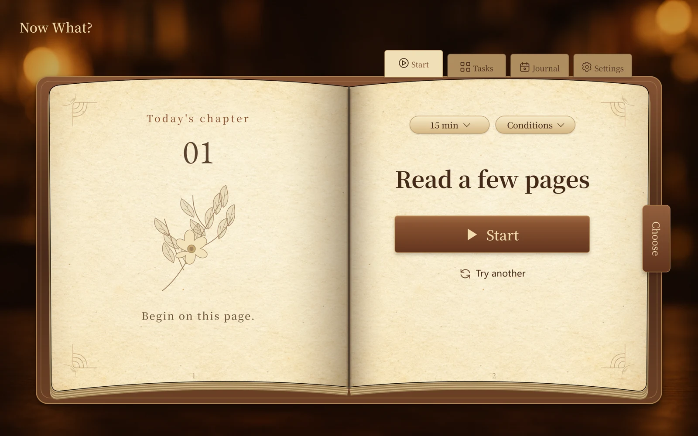
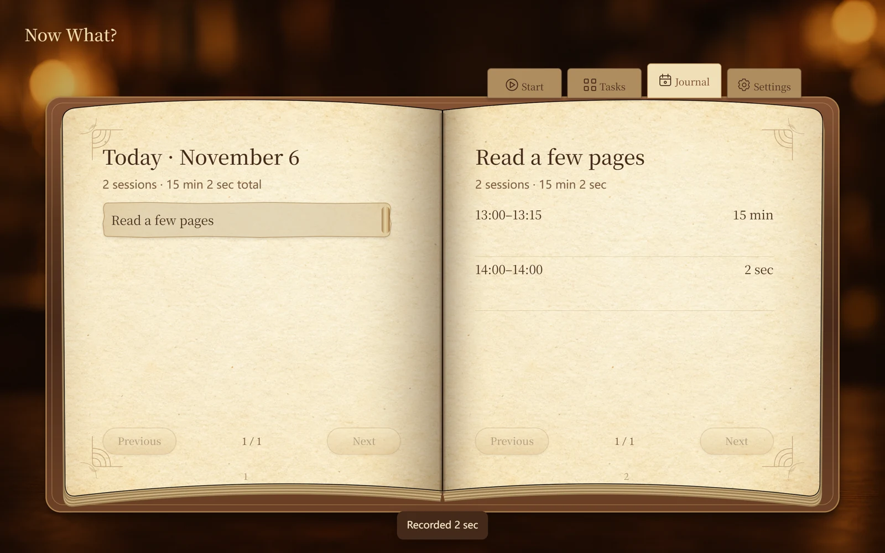

Keep your ideas.
Add an activity and a small next step. Pin favorites and drag the grip to put tasks in your own order.
A QUIET PLACE TO BEGIN
Keep the things you want to do.
Choose one that fits right now.
Free. No account. Your data stays on this device.

HOW IT WORKS
Add an activity and a small next step. Pin favorites and drag the grip to put tasks in your own order.
Choose your time and current conditions. Start a suggestion, try another, or choose for yourself.
Focus, pause when you need to, and end to save your time. Leave a note for next time.
A WALK THROUGH THE APP
59 seconds · English voice
English and Chinese subtitles.
59 seconds · English voice
English and Chinese subtitles.
A RECORD OF YOUR TIME
See what you made time for. Open an activity, review your sessions, and pick up where you left off.
Light and dark themes. English, Chinese and Japanese.
Export a backup in Settings to keep a copy.

Installed apps work offline. Windows shares the system WebView2 runtime; first setup needs internet if it is missing.
Windows may show an unknown-publisher notice. Android needs an up-to-date WebView.
Back up before updating. Install over your existing 1.1–1.4 app to keep its data. From Windows 1.0, export your data first and restore it in Settings.
Release notes ↗